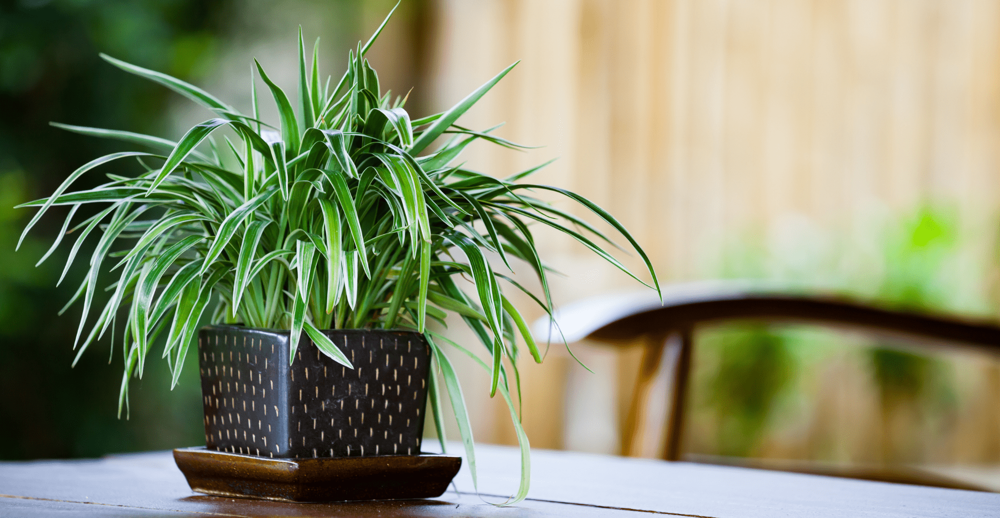
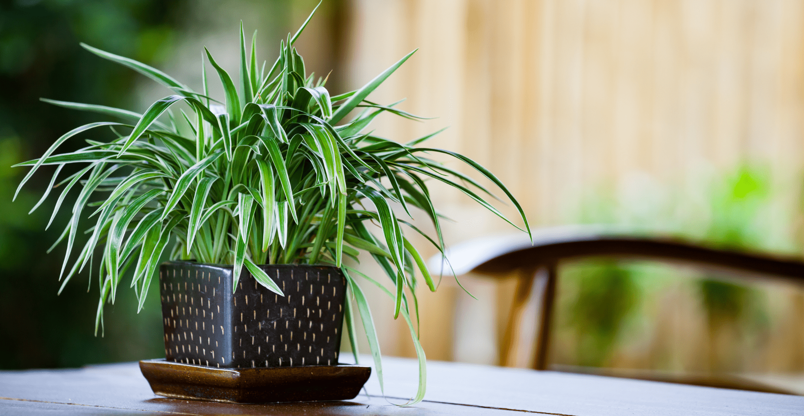

Zelenec chochlatý
Zelenec je jednou z najznámejších a najobľúbenejších izbových rastlín a to z dobrého dôvodu: nielenže sa ľahko pestuje, ale znesie aj náročnejšie podmienky. Okrem toho so svojimi krásnymi oblúkovitými listami, ktoré majú limetkovozelené a biele sfarbenie, prináša na prázdne parapety sviežosť.
Zelenec pochádza z južnej Afriky. Má preto rád teplé a vlhké prostredie a je dobre prispôsobivý. Ak je vzduch suchý, listy rastliny sa skrútia alebo špička listu zožltne a uschne. Rastie pri teplotách v rozmedzí 13 – 27 ℃, najlepšie pri 20 – 24 ℃. Pri teplotách nad 30 ℃ môže prestať rásť a pri veľmi nízkych teplotách rastie pomaly. Jeho teplota na prezimovanie by nemala byť nižšia ako 10 ℃ kvôli jeho slabej odolnosti voči chladu.
Galéria
 

Komentáre
Aktuálne žiadne komentáre